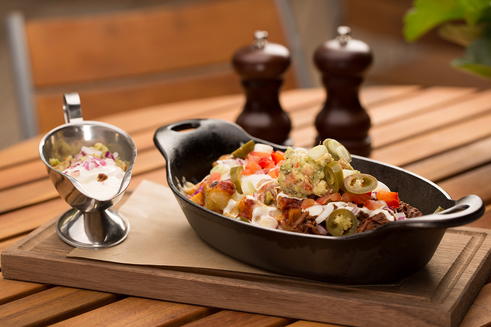

1 / 3

Caption Text
2 / 3

Caption Two
3 / 3

Caption Three
NE PİŞİRŞEM DİYE DÜŞÜNMEYİN
"Bugün ne pişirsem?" diye düşünmekle yorulmayın,
Lezizz günün menüsüne bir göz atın
Akşam yemeği için ne pişireceğinize henüz karar veremediniz mi? O halde kolay ve lezzetli yemek tariflerimize mutlaka bir göz atmalısınız. özellikle çalışanların akşam yemeklerinde kurtarıcısı olacak. İşte Lezizz günün menüsü…
GIDA'NIN YARARLARI
Bal bakteri barındırmadığı için doğal antibiyotik özelliği taşır, çok güçlü bir antioksidandır. Bu özelliğinden dolayı serbest radikkalerle etkili mücadele eder. Mikropların kırılmasını sağlar.
Balın yaraların çabuk iyleşmesini sağladığı bilinmektedir. Öksürüğe, uykusuzluğa, astım ve bronşit hastalıklarına iyi gelir. Vücut içerisinde ve deride meydana gelen enfeksiyonları kolaylıkla ortadan kaldırabilir.
.
YEMEK YEMEK ÇOK ZEVKELİ
İnsan geçmişte hayatta kalmak, açlıktan ölmemek için yemek yerdi. Oysa günümüzde dünya gibi insan da zevkleri de değişmekte İnsanlar imkanları elverdiği derecede artık sadece doymak için değil aynı zamanda keyif almak için de yemek yiyorlar. Ve bu konuda oldukça hassas oldukça seçici davranmaktadırlar. Televizyonlara baktığımızda bir çok yemek ve eğlence programının olmasını daha iyi anlayabiliriz..